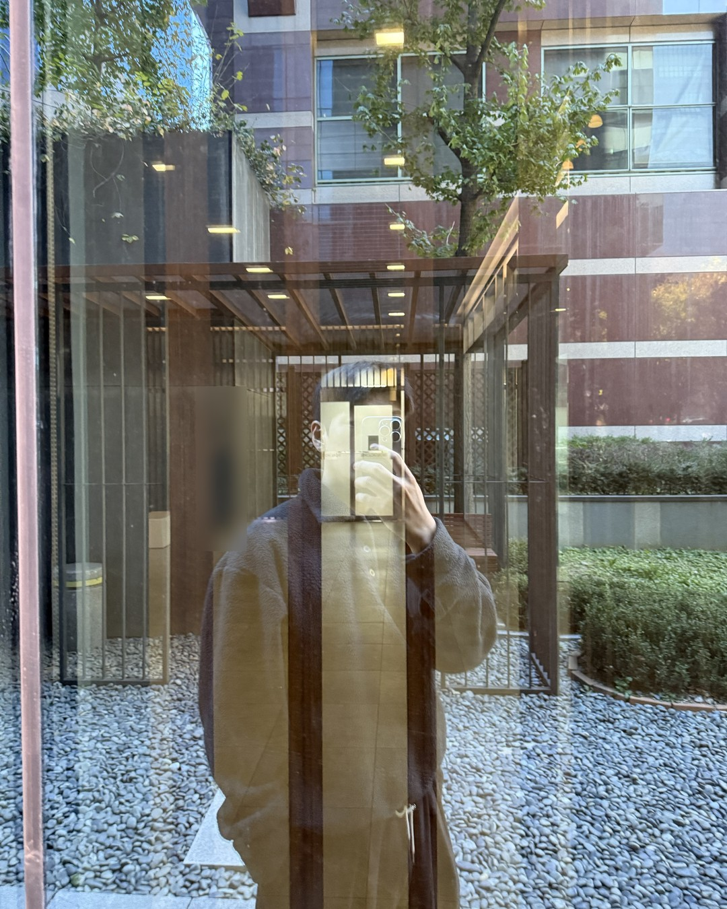
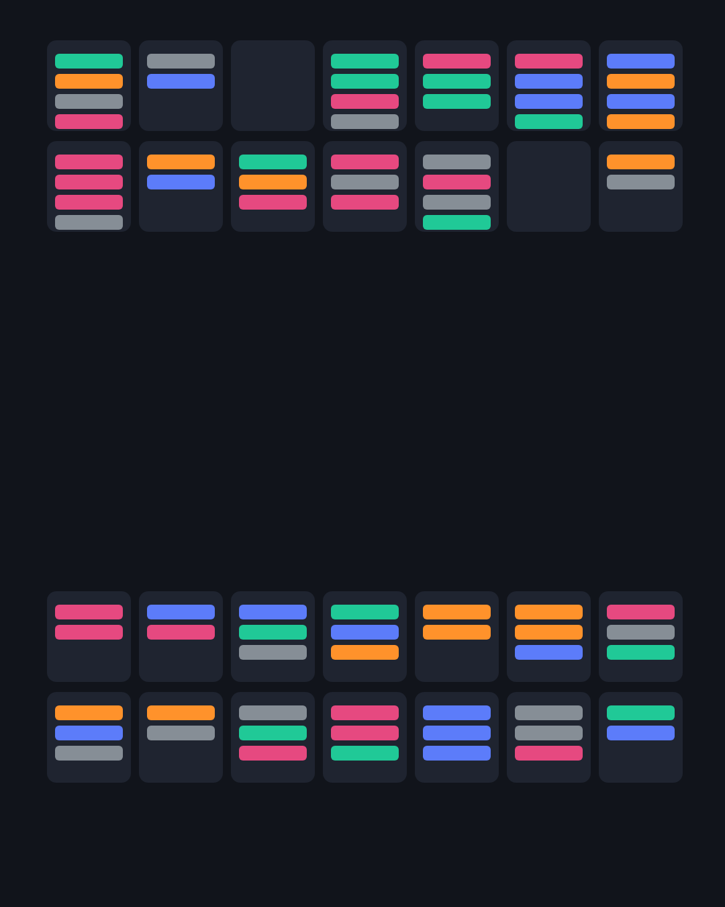
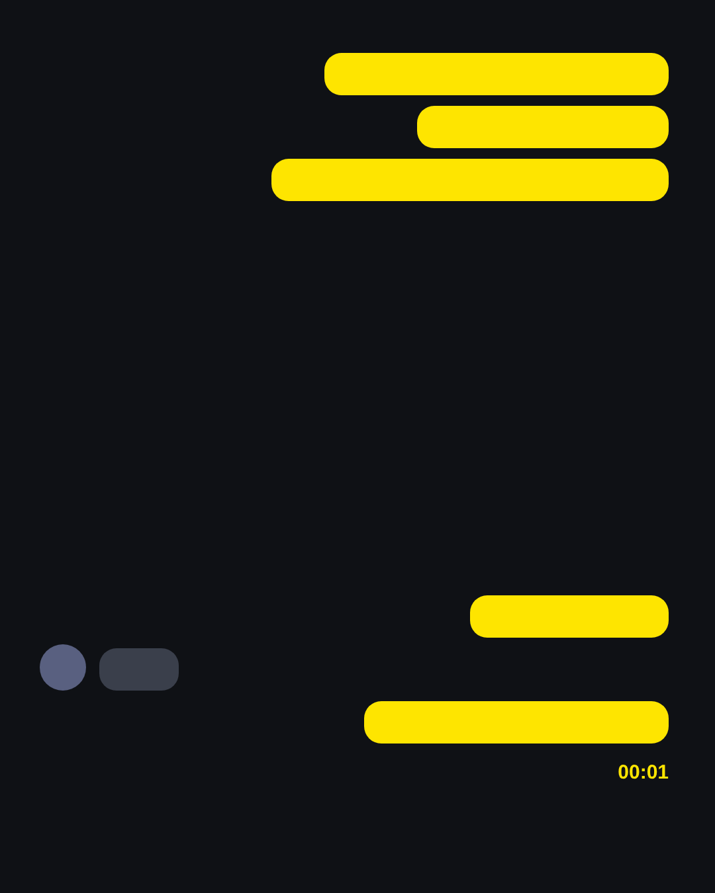
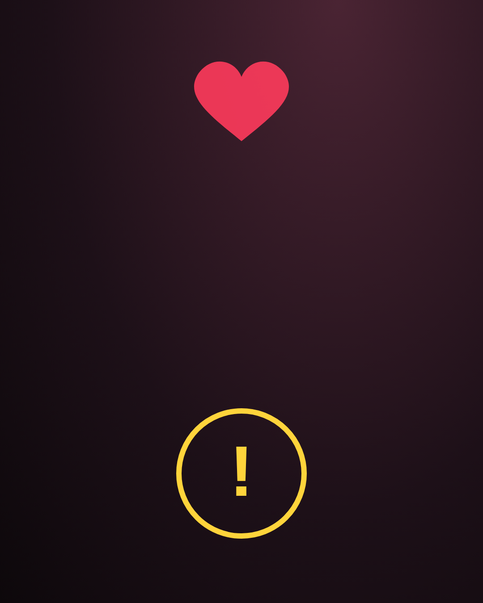
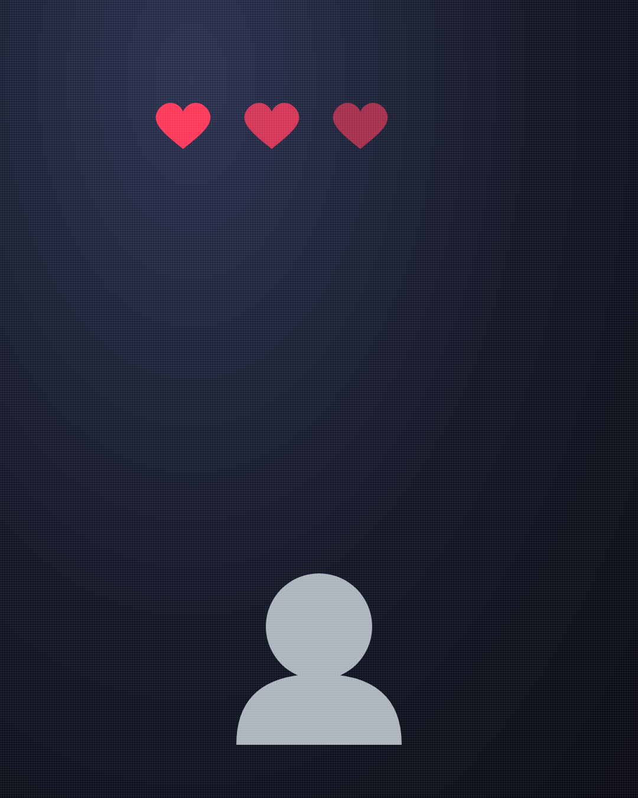
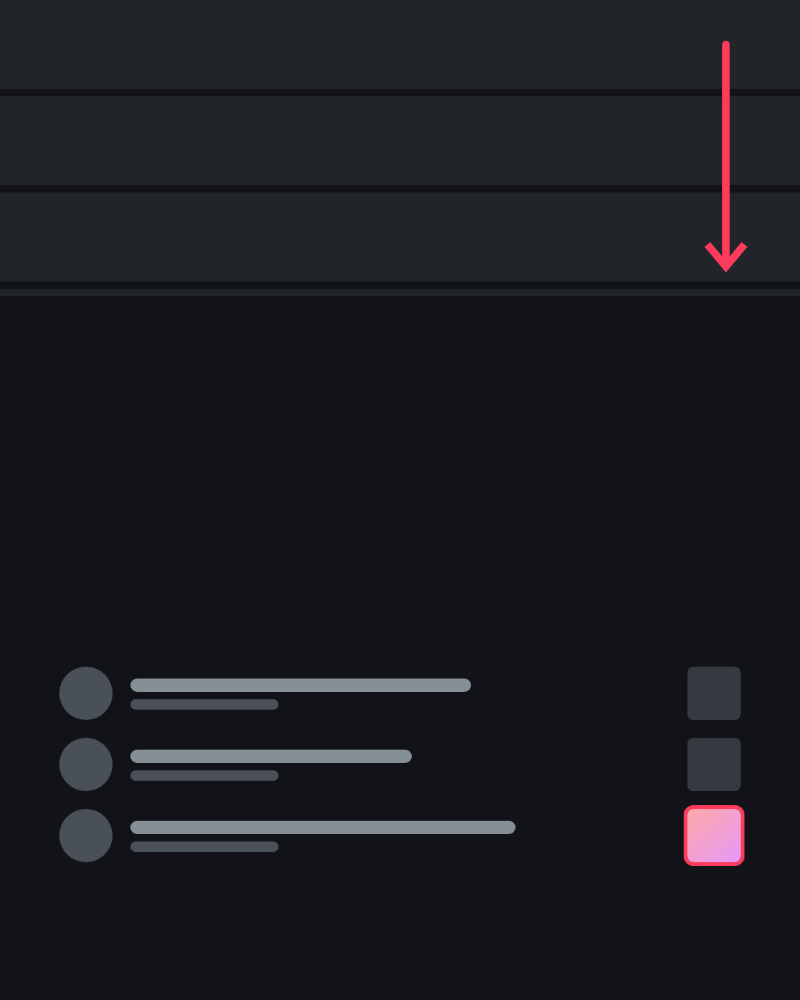
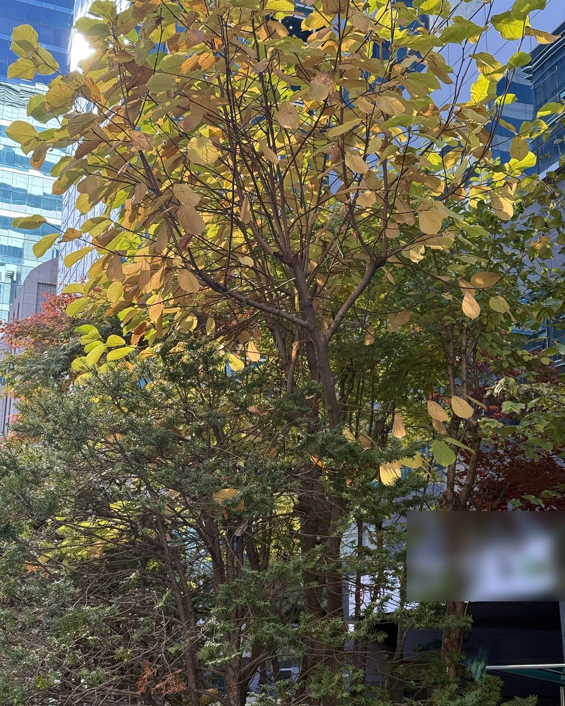

남자에게
질리는 여자로 남는 법
(나빠서가 아니라, 너무 편해서.)
1/14
@mszexc
넘겨보세요 →
연애는 하는데 설레지 않는 사이.
만드는 법은 생각보다 쉬워요.
2/14
@mszexc
남자들끼리 하는 말 #49

첫 번째.
모든 일정을 그에게 맞추세요.
(내 약속은 언제든 취소할 수 있게.)
3/14
@mszexc
남자들끼리 하는 말 #49

두 번째.
연락은 늘 먼저, 답장은 1분 안에.
(그가 기다릴 일은 만들지 마세요.)
4/14
@mszexc
남자들끼리 하는 말 #49

세 번째.
그의 엄마처럼 챙기세요.
"밥은? 약은? 옷 따뜻하게 입었어?"
5/14
@mszexc
남자들끼리 하는 말 #49

네 번째.
서운해도 괜찮은 척하세요.
(말 안 해도 언젠가 알아주겠죠.)
6/14
@mszexc
남자들끼리 하는 말 #49

다섯 번째.
내 얘기는 줄이고, 그의 얘기만 들으세요.
7/14
@mszexc
남자들끼리 하는 말 #49
남자들끼리는 이렇게 말해요.
"걔는 편해. 근데 그게 다야."
8/14
@mszexc
남자들끼리 하는 말 #49
아니요, 반대로 하세요.
다섯 가지를 다 하면, 남자는 고마워하지만 설레지 않아요.
9/14
@mszexc
남자들끼리 하는 말 #49

남자는
손에 다 잡힌 건 더 이상 궁금해하지 않아요.
10/14
@mszexc
남자들끼리 하는 말 #49
그러니 내 약속은 지키고,
내 하루는 내 것으로 두세요.
11/14
@mszexc
남자들끼리 하는 말 #49
서운하면 짧게 말하세요.
"그건 좀 서운했어."
(참다가 터뜨리는 것보다 백 번 나아요.)
12/14
@mszexc
남자들끼리 하는 말 #49
편한 사람과 놓치기 싫은 사람의 차이는,
그 여자에게 '자기 삶'이 있느냐예요.
13/14
@mszexc
남자들끼리 하는 말 #49
이것만 기억하세요.
편한 사람은 고맙고, 궁금한 사람은 놓치기 싫어요.
남자가 하는 말의 뜻은 전자책 1·2권에 · 프로필 링크에서 무료로 받아보세요
14/14
@mszexc
남자들끼리 하는 말 #49